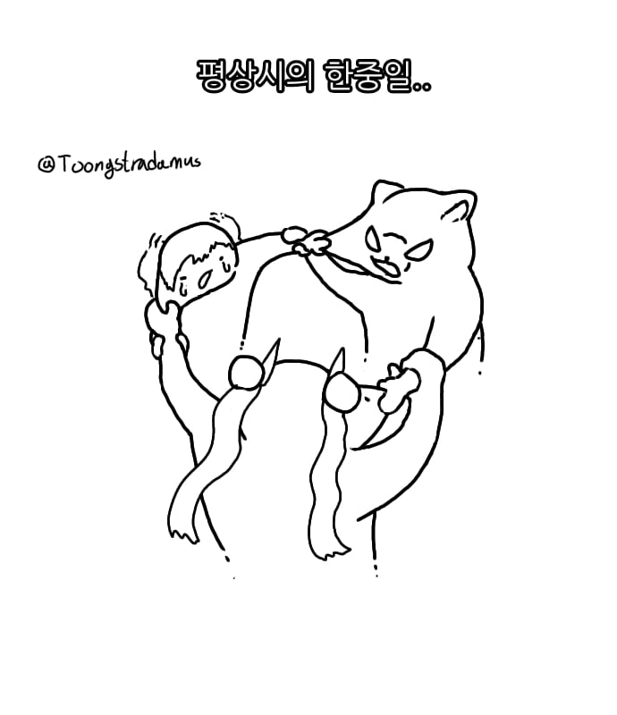
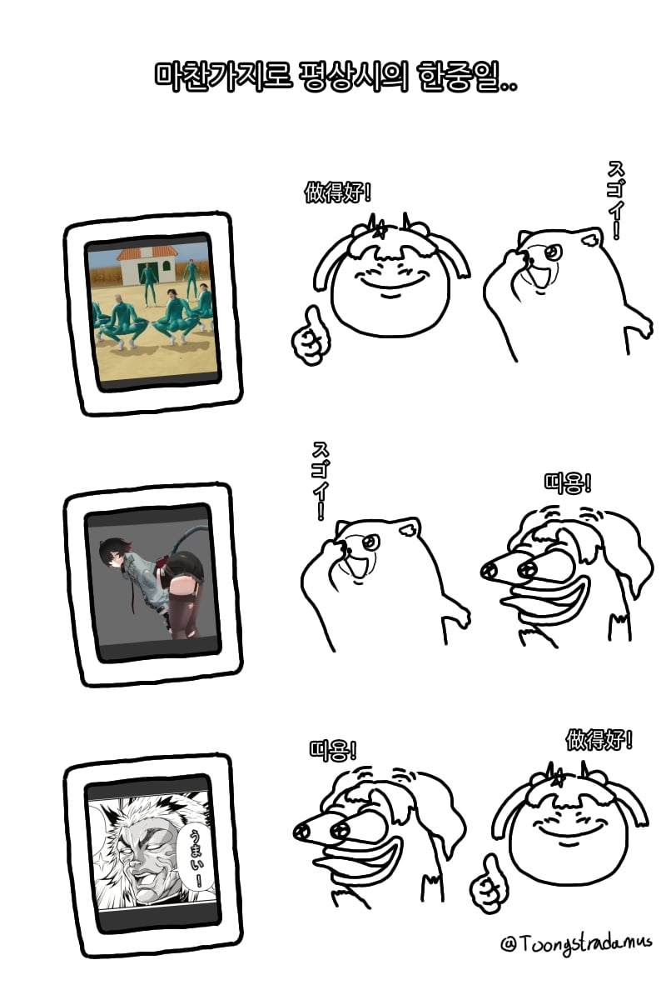
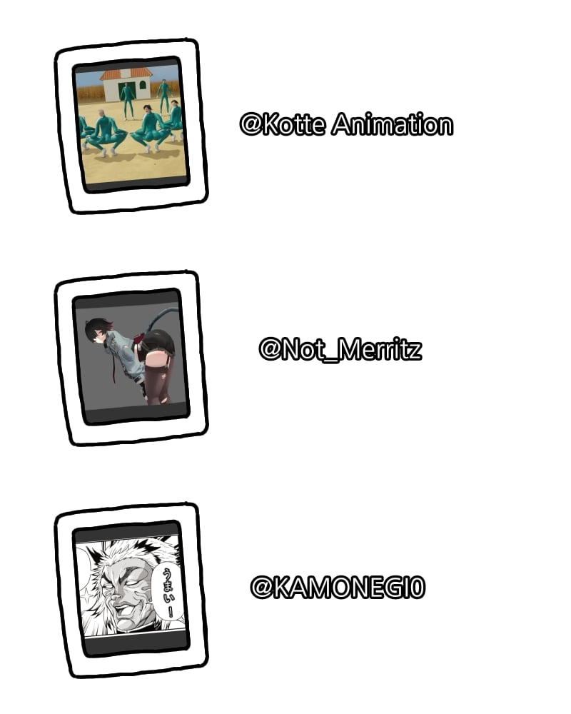

37 · 11 · 1 시간 전 · 원문



수집 당시 댓글 11개
질병계 · 20 시간 전
저 kotte 채널 뭔가 엄청 양키감성이라 한국 채널인지 몰랐음
↳ 답글 · 노란머리카이큐 · 20 시간 전
저거 만든게 한국인이었다고?
↳ 답글 · 좋은말좋은생각좋은행동 · 15 시간 전
얼공도 함
↳ 답글 · 이성적인도라이 · 5 시간 전
메롱이랑 콜라보도 함
↳ 답글 · q1w2e3r4t5 · 14 분 전
난징그럽던데 뭐가그리 좋아하는건지 모르겠음 ㅋㅋㅋㅋ
어뎁터 · 5 시간 전
마커스난네가좋다 · 1 시간 전
존 도는 대체 무엇일까...
↳ 답글 · 년전개그 · 1 시간 전
도존 선생님 그립읍니다
으아아아아아니 · 1 시간 전
셋은 문제아지만 최강!
착한생각올바른생각 · 1 시간 전
Rldydhd · 1 시간 전
근데 지금 중국이 벨붕수준으로 존나 쎄져서 찐 전쟁각 재는중
저 kotte 채널 뭔가 엄청 양키감성이라 한국 채널인지 몰랐음